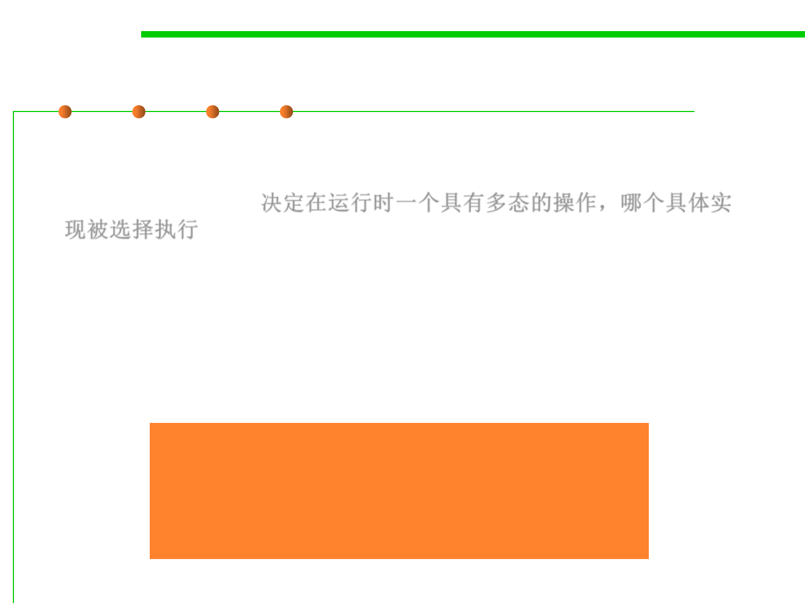

Dynamic dispatch动态分派
3.4 Object-Oriented Programming (OOP)
▪ Dynamic dispatch is the process of selecting which
implementation of a polymorphic operation (method or function)
to call at run time. 决定在运行时一个具有多态的操作，哪个具体实
现被选择执行
– Object-oriented systems model a problem as a set of interacting objects
that enact operations referred to by name.
– Polymorphism is the phenomenon wherein somewhat interchangeable
objects each expose an operation of the same name but possibly differing
in behavior.
Determining which method to call at
runtime, i.e., a call to an overridden or
polymorphic method is resolved at
runtime